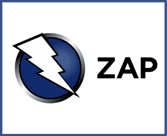
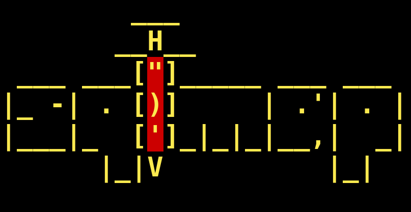

Used Tools

Nmap
Nmap is a powerful network scanning and security auditing tool. It's used to discover devices, open ports, and running services on a network.

Metasploit
Metasploit a penetration-testing framework for running exploits and payloads. Use only on systems you own or have permission to test.

Burp Suite
Burp Suite an integrated web-application security testing toolkit (proxy, scanner, repeater) used to intercept, analyze, and exploit HTTP/S traffic.

Nessus
Nessus a vulnerability scanner that detects missing patches, misconfigurations, and known CVEs use only on systems you own or are authorized to test.

Hydra
Hydra a fast parallelized login-brute-force tool for testing password strength against services (SSH, FTP, HTTP forms, etc.). Use only on systems you own or are authorized to test.

Wireshark
Wireshark a GUI packet analyzer that captures and inspects network traffic (packets) for troubleshooting, protocol analysis, and forensic investigation.

Hashcat
Hashcat: a high-performance password-recovery and cracking tool that uses CPU/GPU acceleration to brute-force or use wordlists against hashed passwords (MD5, bcrypt, NTLM, etc.).

Autopsy
Autopsy: a graphical digital-forensics platform for analyzing disk images, recovering files, and investigating timestamps/artifacts during incident response use only on systems/images you have authorization to examine.

Aircrack-ng
Aircrack-ng a suite for auditing WiFi: capture packets, extract handshakes, and crack WEP/WPA/WPA2 PSKs using wordlists/GPU acceleration.

SET Toolkit
SET an open-source framework for automating social-engineering attacks (phishing, credential harvesting, payload delivery) to test human vectors.
Maltego
Maltego an open-source intelligence (OSINT) and forensics application that provides data mining and link analysis for gathering information about people, companies, domains, and infrastructure.

OWASP ZAP
OWASP ZAP a leading open-source web application security testing tool that provides automated scanning and manual testing capabilities for identifying vulnerabilities in web applications.

SQLMap
SQLMap an open-source penetration-testing framework for automating SQL injection attacks and database takeover.
John the Ripper
John the Ripper a fast and flexible password recovery tool that supports various hash formats and can be used for both offensive and defensive purposes.
Nikto
Nikto a web server scanner that performs comprehensive checks for potential security vulnerabilities, outdated software versions, and misconfigurations.